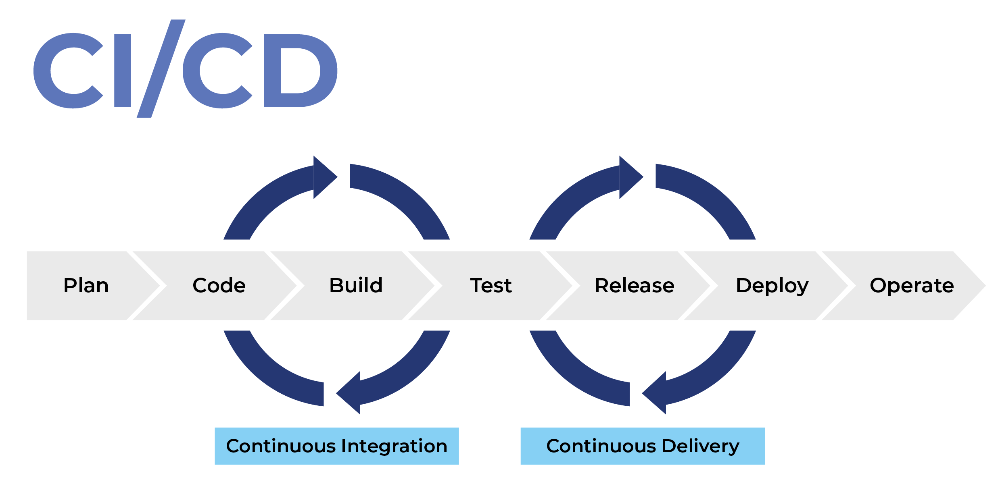
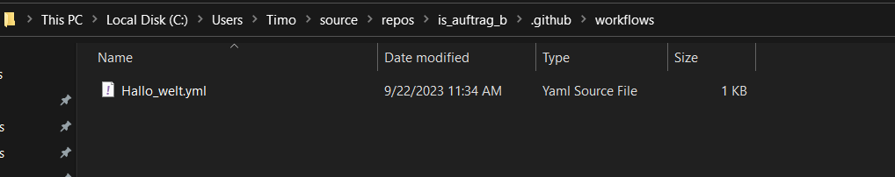
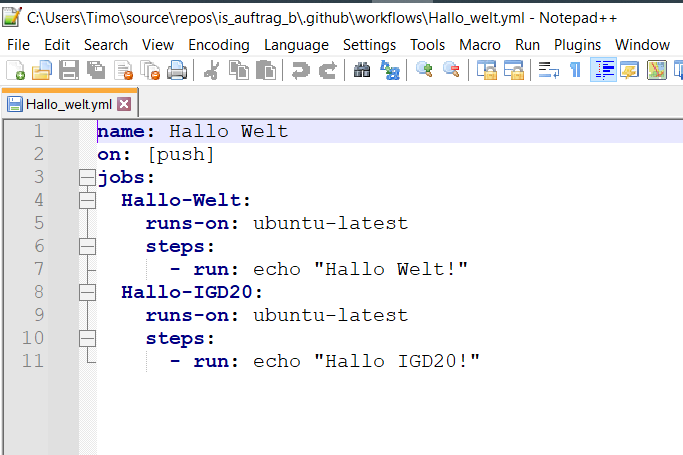
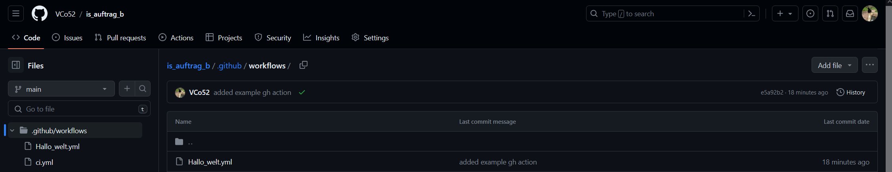
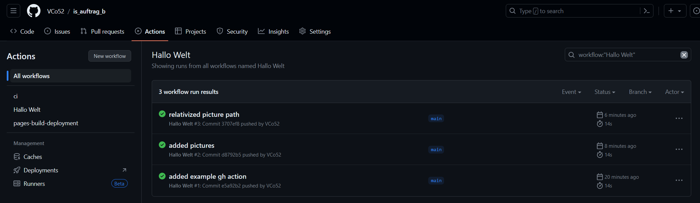
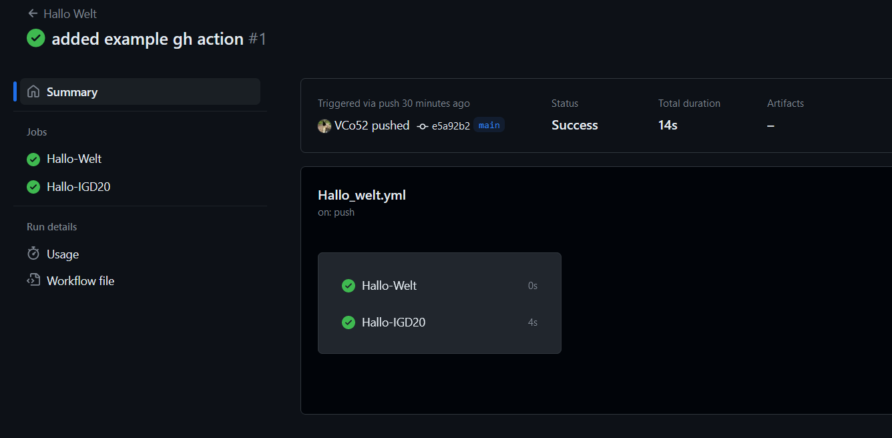

GitHub Actions
GitHub Actions können alle möglichen Aufgaben eines Anwendungsentwicklers erfüllen. Nachdem der Quellcode vom Entwickler geschrieben und auf das Git-Repo 'gepusht' wurde, kann der Code mittels GitHub-Actions auf Fehler überprüft, Tests durchgeführt oder auch in eine Anwendung kompiliert werden. Dafür beschreibt man in einer Action, welche Befehle wann ausgeführt werden sollen.
CI/CD
Die oben genannten Vorgänge werden als Continous Integration(CI) und Continous Deployment (CD) bezeichnet.
|  |
|---|
| Quelle: http://testbone.com/blog/continuous-integration/cover.jpg Zugriff am 27.09.2023 07:15 |
Continous Integration
Integration von Quellcode in ein Projekt. * Überprüfen auf Fehler im Code * Syntax Überprüfung * Style-/Formüberprüfung * Tests des Codes * Überprüfen der Umsetzbarkeit auf Produktiven Systemen
Continous Deployment
Umsetzen des Codes auf produktive Systeme oder erstellen von Anwendbarer Software.
- kompilieren von Code
- platzieren von Dateien auf Servern
- Verteilen von Updates
- Erstellen von Containern
Funktionsweise
GitHub Actions werden in YAML-Konfigurationsdateien beschrieben. In diesen können u.a. folgende Eigenschaften beschrieben werden.
- name der Action
- wann wird die Action ausgeführt
- wo wird die Action ausgeführt (Betriebssystem, custom Runner, etc.)
- was führt die Action aus
Die Dateien werden im .github/workflows Ordner innerhalb des Git-Repos abgelegt.
Beispiel
Folgend wird eine GitHub Action mit dem namen 'Hallo Welt' beschrieben. Diese wird nach jedem push auf das repository ausgeführt. Die Action beinhaltet zwei Jobs: "Hallo-Welt" und "Hallo-IGD20". Jeder Job führt den 'echo'-Befehl auf einem Ubuntu-System aus, welcher eine Nachricht in die Konsole schreibt.
name: Hallo Welt
on: [push]
jobs:
Hallo-Welt:
runs-on: ubuntu-latest
steps:
- run: echo "Hallo Welt!"
Hallo-IGD20:
runs-on: ubuntu-latest
steps:
- run: echo "Hallo IGD20!"
| Feld | Beschreibung |
|---|---|
| name | Name der Action |
| on | Bei welchem Ereignis wird die Action ausgeführt |
| jobs | logische Unterteilung der Action in Abschnitte, "Jobs" |
| runs-on | Auf welchem Zielsystem soll die Action ausgeführt werden |
Umsetzung
- im Repository den Ordner .github/workflows anlegen und Datei 'hallo_welt.yml' anlegen 
- oben stehende Konfiguration in Datei einfügen 
- Änderungen commiten und pushen 
- GitHub Action analysieren (GitHub Repo > Actions)  